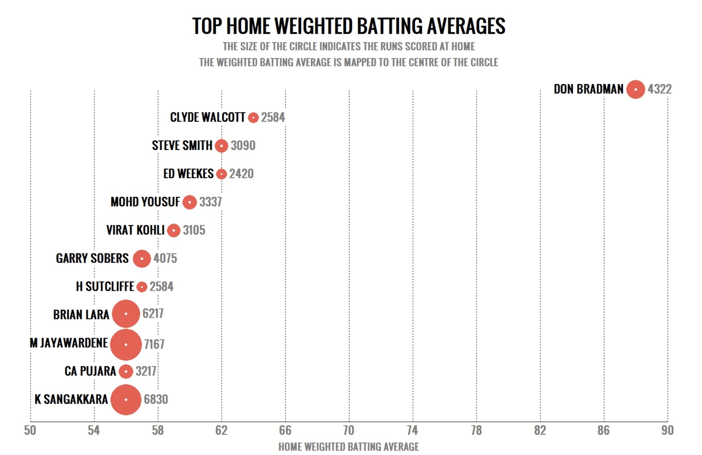
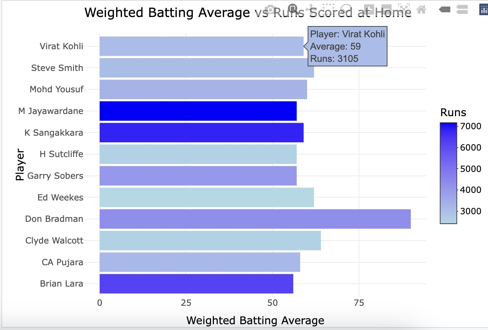
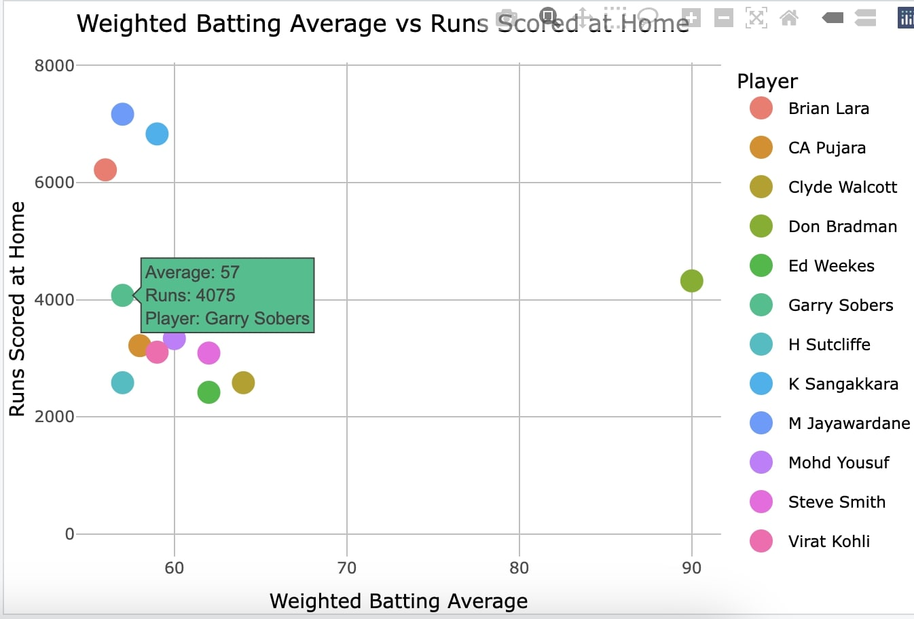

My Projects:
Mid Project
Overview:
The motivation for undertaking this project is based on the recognition that although the initial representation of data offers a fundamental understanding of its arrangement and potential consequences, there frequently exists a wide array of alternative viewpoints and stories that can be revealed through imaginative and contemplative reconfiguration.
In the process of redesigning the chosen visualization, this project will critically evaluate the effectiveness of different design choices in conveying the intended message.
Moreover, the project will explore the role of context in visualization design, considering how the intended audience and the medium of presentation can impact design decisions.
Original Graph:

The graph titled “TOP HOME WEIGHTED BATTING AVERAGES” displays a number of cricket players with circles indicating their runs scored at home. The size of each circle corresponds to the number of runs scored, and the x-axis represents the weighted batting average at home. The graph is designed to compare players’ performances.
Here are some potential issues with the graph:
Circle Size Representation: It’s unclear whether the circle sizes are to scale with the runs scored. Without a key or scale for circle size, it’s difficult to interpret the exact differences in runs.
Axis Labeling and Scaling: The x-axis labels for the weighted batting averages could be more descriptive. Additionally, the x-axis does not start at zero, which might be by design to focus on the range of interest, but could potentially mislead by exaggerating differences.
Data Point Clarity: If the circles represent runs scored, then having them mapped to the batting averages might confuse viewers into thinking the average is related to the circle’s area.
Legend or Guide: There is no legend explaining the size of the circles, leaving the viewer to guess what different sizes represent.
Redesigned Graph:
First Redesign:
Bar Graph:

Simplification and Clarity: The horizontal bar chart simplifies the comparison of weighted batting averages across players. By using a single metric per bar (the weighted batting average), the visualization directly communicates one aspect of player performance, reducing complexity.
Use of Color Gradient: To represent runs scored at home, the bar chart employs a color gradient ranging from light blue to blue. This specific aesthetic choice not only adds a visual dimension to the data but also facilitates an intuitive understanding of runs scored in relation to batting averages. Importantly, this is achieved without overcrowding the chart with multiple data points or elements.
Improved Readability: The readability of player names is improved by flipping the chart to a horizontal orientation. This adjustment also allows for better utilization of space, particularly when compared to the original graph where text overlap proved problematic.
Interactive Elements: By converting the static version of the chart to an interactive format using plotly, user engagement is further enhanced.This interactive feature enables a detailed exploration of the data through tooltips, thereby providing a more interactive and immersive experience.
Second Redesign:
Scatter Plot:

Direct Comparison of Two Metrics: The redesign of the scatter plot allows for a direct comparison between runs scored and batting averages, thus showcasing the relationship between these two significant metrics. Each player is represented by a point on the plot, positioned according to their performance statistics.
Color Coding by Player: Enhancing the distinction between players, assigning a unique color to each individual improves the ability to track and analyze individual performances across the plot.
Interactivity with Tooltips: The utilization of plotly for interactivity introduces tooltips that provide detailed information, such as the player’s name, batting average, and runs scored, when hovering over a data point. This addition effectively addresses the potential issue of overlapping labels and enhances the dynamic informativeness of the visualization.
Adjustable Y-Axis Scale: Setting the y-axis to start from 0 and extend beyond the maximum runs scored ensures that the data representation is proportionate and grounded, enhancing the plot’s interpretability.
Conclusion:
The interpretability and readability of cricket player performance data are significantly enhanced by the redesigned visualizations in comparison to the original graph. The original graph’s shortcomings, such as text overlap and ambiguous data representation, are addressed by the new designs through the utilization of a horizontal bar chart and an interactive scatter plot. The intuitive color gradient of the horizontal bar chart effectively conveys runs scored at home, while the scatter plot allows for an interactive and detailed examination of the relationship between runs scored and batting averages. These enhancements not only simplify data interpretation but also contribute to an engaging user experience, ensuring that the insights are both accessible and compelling.
Youtube link:
Here is a link to my youtube video explaining the project.
References:
Original Graph link:
26, A. N. | F. (2019, February 26). Home and away: Batsmen who travel well and those who don’t. Cricinfo. https://www.thecricketmonthly.com/story/1175355/home-and-away–batsmen-who-travel-well-and-those-who-don-t
Videos. Quarto. (n.d.). https://quarto.org/docs/authoring/videos.html